În stînga este slide-ul din curs, în dreapta aceeași figură sau același tabel, calculat în browser din aceleași date. Butonul ▶ modifică parametrul pas cu pas; casetele „Exemplu rezolvat” refac calculul cu cifrele capitolului.
Forma în spațiul stărilor · Filtrul Kalman · Netezire, verosimilitate și valori lipsă · Trend, ciclu și factori comuni · Modele Markov switching
Forma în spațiul stărilor
Traiectorii local level și local linear trend
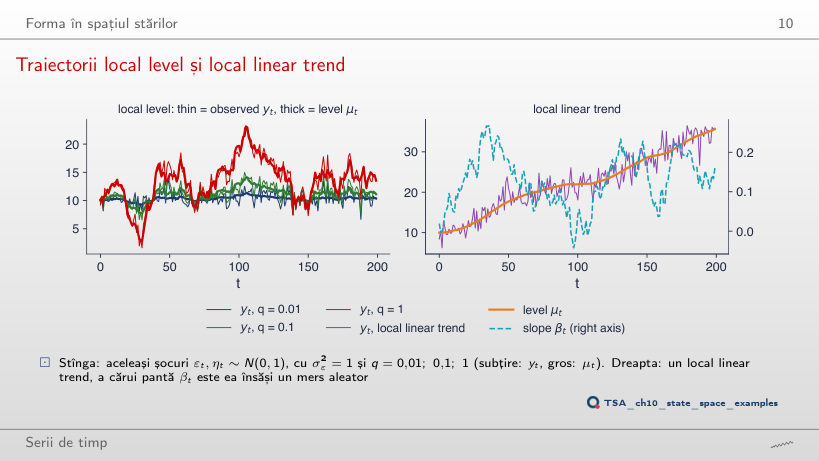
Răspuns
Cea cu q = 0,01: −0,51 (teoretic −1/2,01 = −0,50); pentru q = 1 autocorelația este −0,28 (teoretic −1/3). Cînd zgomotul domină, Δyt ≈ εt − εt−1, un MA(1) cu ρ(1) = −1/2; prima diferență a unui mers aleator fără zgomot ar fi necorelată.
Exemplu rezolvat: AR(2) pentru creșterea PIB din SUA
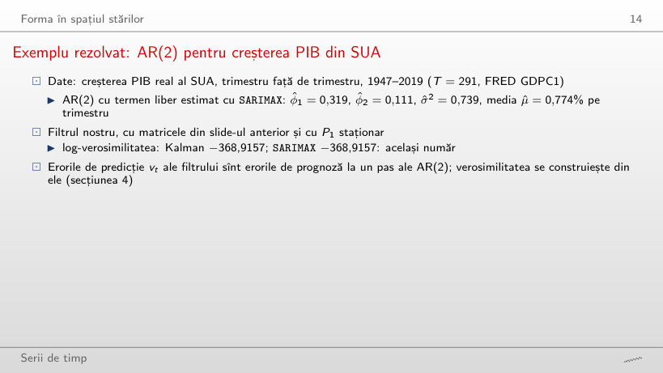
Exemplu rezolvat
Răspuns
0,858 = γ(0), varianța staționară a AR(2), elementul (1,1) al lui P1. F2 = 0,748, iar din t = 3, cu două laguri cunoscute, Ft = σ̂² = 0,739. Un model staționar nu are nevoie de pornire difuză.
Filtrul Kalman
Exemplu rezolvat: trei perioade de mînă (1/2)
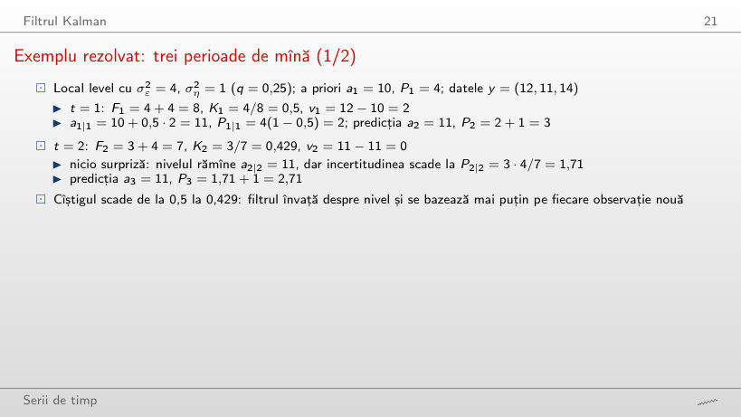
Exemplu rezolvat
Răspuns
K1 = 4/(4 + 8) = 0,333: cu măsurători mai zgomotoase filtrul se bazează mai puțin pe observație, iar nivelul filtrat rămîne mai aproape de predicție (a1|1 = 10,67 în loc de 11).
Exemplu rezolvat: trei perioade de mînă (2/2)
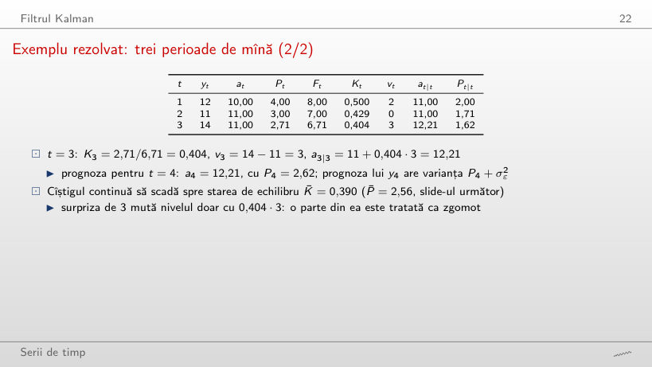
Răspuns
Cu K3v3 = 0,404·7 = 2,83, pînă la a3|3 = 13,83. Cîștigul K3 = 2,71/6,71 = 0,404 nu depinde de date, ci doar de P3 și σ²ε: o surpriză mai mare mută nivelul proporțional, nu pînă la observație.
Starea de echilibru și netezirea exponențială
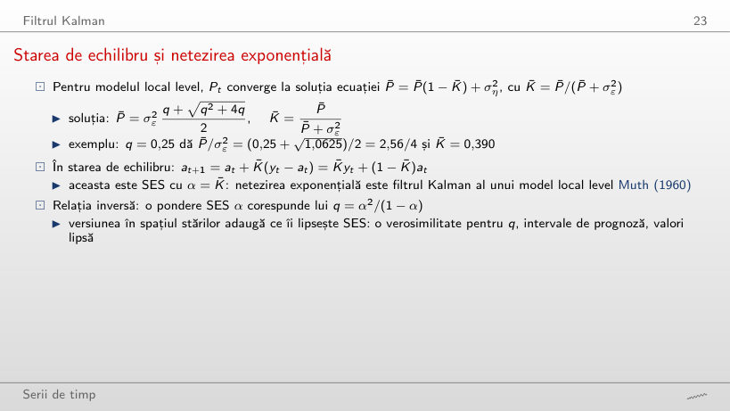
Exemplu rezolvat
Răspuns
P̄/σ²ε = (10 + √140)/2 = 10,92, deci K̄ = 10,92/11,92 = 0,916. K̄ rămîne sub 1 pentru orice q finit; q/(q + 1) = 0,909 nu este starea de echilibru.
Nilul: filtrul Kalman pentru modelul local level
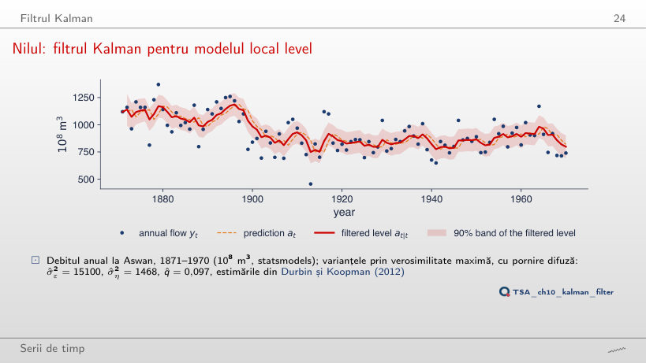
Răspuns
La 899, față de 1037 la q̂ = 0,097: cu q = 1, K̄ = 0,618, iar nivelul preia aproape două treimi din surpriză (757 în 1905). Nivelul se adaptează mai repede la baraj, dar urmărește și anii izolați.
Interpretarea filtrului pentru Nil
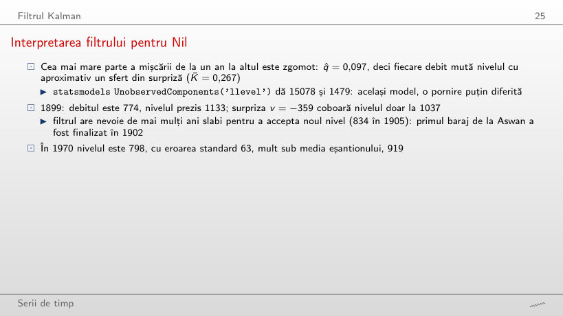
Răspuns
Crește, la 0,163 (0,097 pe 1871–1970), cu σ̂²ε = 19103. Pe 50 de ani ruptura din 1899 cîntărește mai mult, iar verosimilitatea o atribuie mișcării nivelului.
Convergența cîștigului Kalman și echivalența cu SES
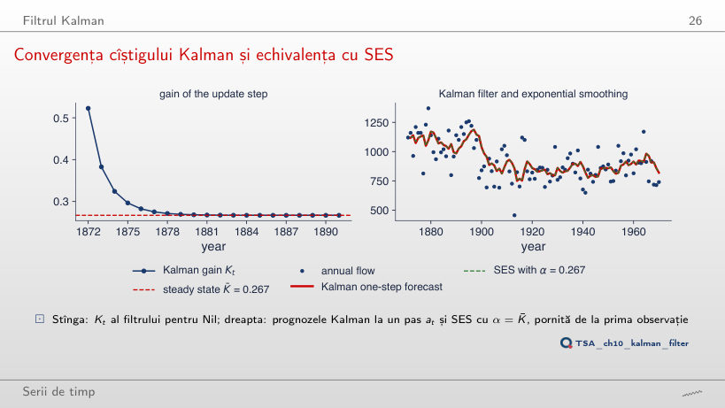
Răspuns
Din anul 5 (din anul 11 la q̂ = 0,097 și din anul 17 la q = 0,03). Cu q mare, Pt se stabilizează repede: fiecare observație nouă domină incertitudinea rămasă de la pornirea difuză.
Netezire, verosimilitate și valori lipsă
Netezirea pe întregul eșantion
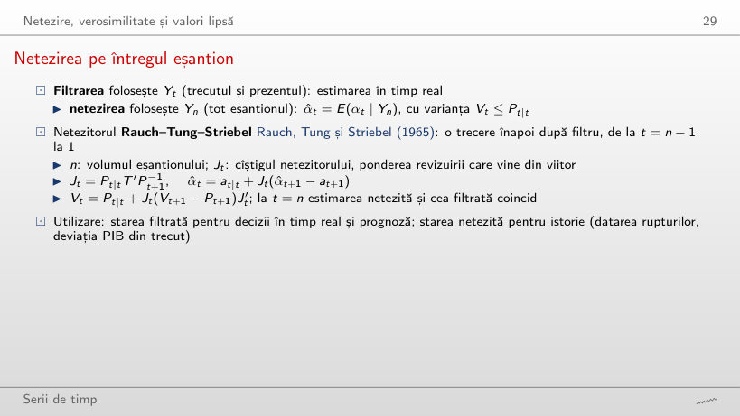
Exemplu rezolvat
Răspuns
Filtrat 1133, netezit 1000: o diferență de 134, mai mare decît în 1897 (1145 față de 1038, adică 107). Netezitorul folosește anii slabi de după 1899, deci coboară nivelul înainte ca scăderea să apară în date.
Nilul: nivelul filtrat și nivelul netezit
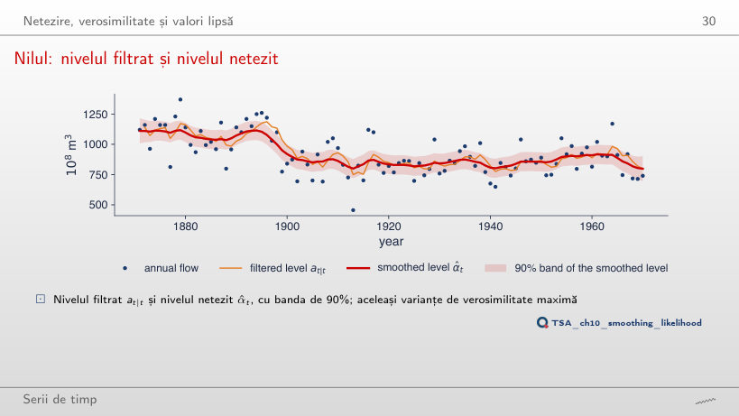
Răspuns
Aproape o dreaptă, care coboară lent de la 956 în 1897 la 881 în 1950: treapta dispare. Cu q mic modelul atribuie scăderea zgomotului, iar netezitorul nu poate arăta o ruptură pe care modelul o exclude.
Verosimilitatea: descompunerea erorilor de predicție
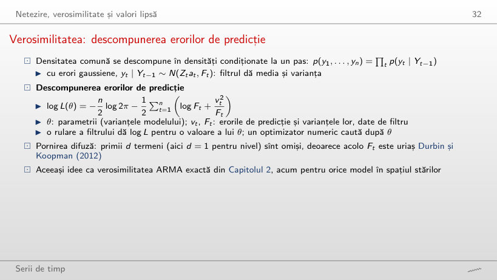
Exemplu rezolvat
Răspuns
1913 (ℓt = −9,78), un singur an foarte secetos; urmează 1916 (−9,18) și 1899 (−9,02). Anul 1871 nu intră în sumă: pornirea difuză îi dă un Ft uriaș.
Verosimilitatea profil și alegerea lui q
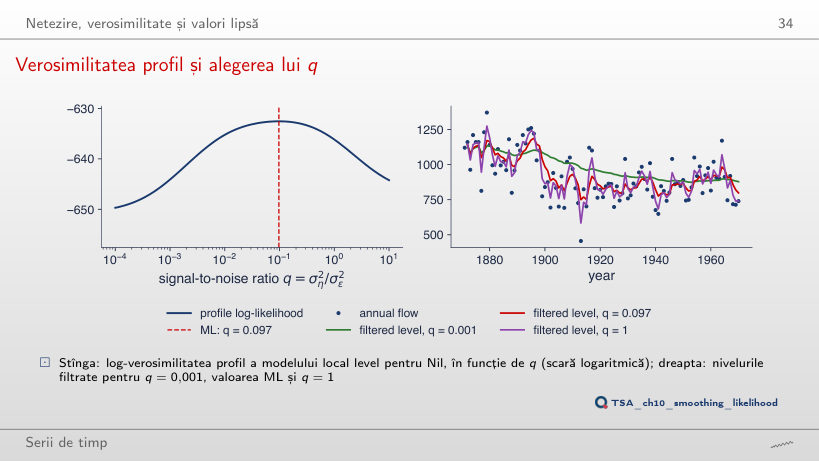
Răspuns
23,3, la fel de departe de date ca q = 0,001 (23,1); q = 1 dă 7,2. Un nivel care urmărește fiecare viitură prognozează la un pas la fel de prost ca un nivel aproape constant.
Diagnosticarea modelului pentru Nil
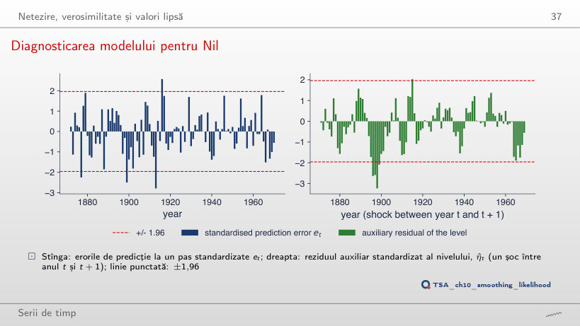
Răspuns
Nu: Q(10) = 20,9, p = 0,022. Un nivel aproape constant lasă scăderea de după 1899 în erorile de predicție, care devin autocorelate; la q̂ = 0,097, p = 0,21.
Ani lipsă și prognoze pentru Nil
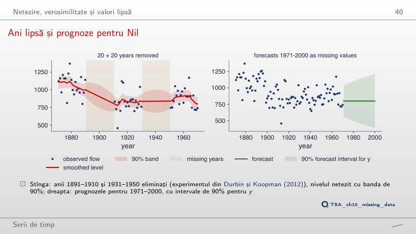
Răspuns
78, față de 99 în 1900 cu goluri de 20 de ani și 48 cu toate datele. Banda crește cu distanța pînă la cel mai apropiat an observat.
Trend, ciclu și factori comuni
Filtrul HP ca netezitor în spațiul stărilor
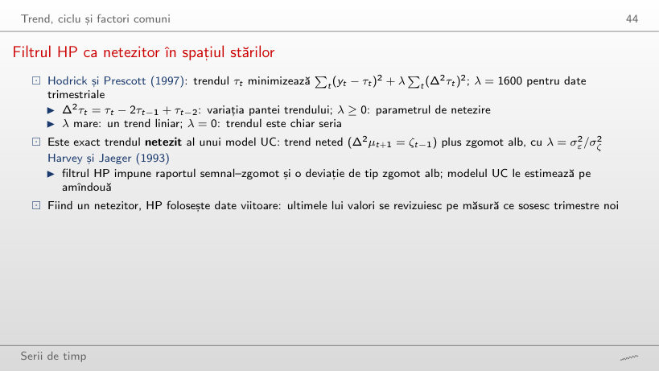
Exemplu rezolvat
Răspuns
5,5, față de 2,9 la λ = 1600 și 1,3 la λ = 1: un trend mai rigid lasă mai mult din mișcarea PIB-ului în deviație.
PIB-ul României: trendul
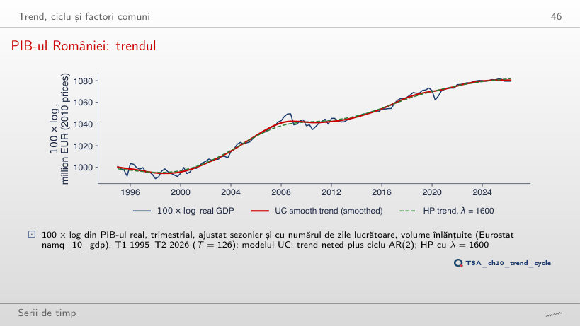
Răspuns
λ = 400: cea mai mare distanță este 0,63 puncte (1,01 la λ = 100 și 2,65 la λ = 1600). Trendul UC este mai flexibil decît trendul impus de λ = 1600, de aceea un λ mai mic îl aproximează mai bine.
Deviația PIB a României: trei metode
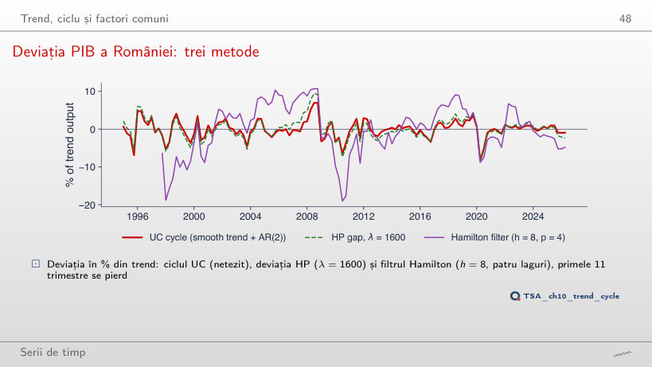
Răspuns
Scade la 4,6 (6,5 la h = 8 și 7,7 la h = 12): reziduul regresiei conține surprizele unui orizont mai scurt.
Deviația PIB în timp real și pe întregul eșantion
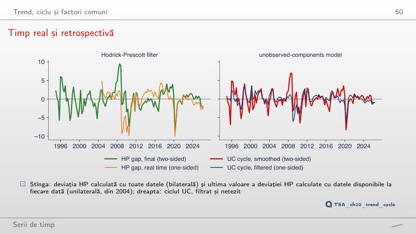
Răspuns
2,2%, exact valoarea în timp real: la capătul eșantionului filtrul bilateral devine unilateral. Cu datele pînă în T2 2026, deviația din T3 2008 este 9,5%.
Un beta variabil în timp: BET și zona euro
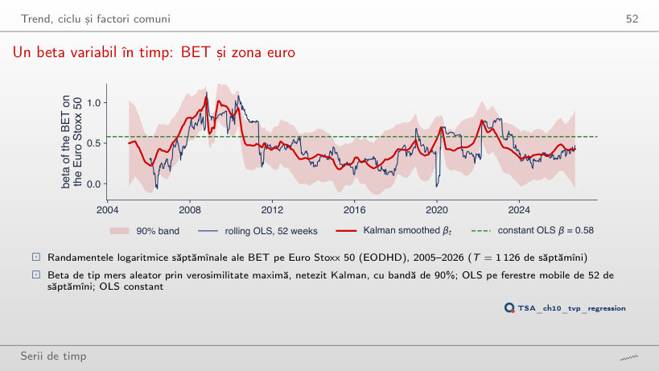
Răspuns
O dreaptă orizontală la 0,58, beta OLS: cu σ²β = 0 filtrul Kalman calculează recursiv estimarea OLS, iar netezitorul dă fiecărei săptămîni estimarea pe tot eșantionul.
Un factor comun al activității din SUA
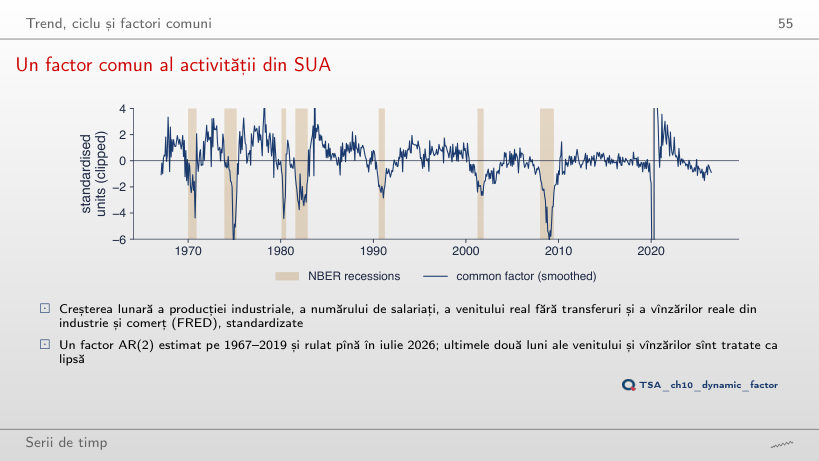
Răspuns
−0,78 cu datele FRED de azi, față de −0,87 cu două luni lipsă (slide-ul, cu datele de atunci: −0,9). Factorul folosește ce a sosit: lipsa venitului și a vînzărilor mută ultima valoare, nu o face imposibil de calculat.
Modele Markov switching
Matricea de tranziție, durate și probabilități ergodice
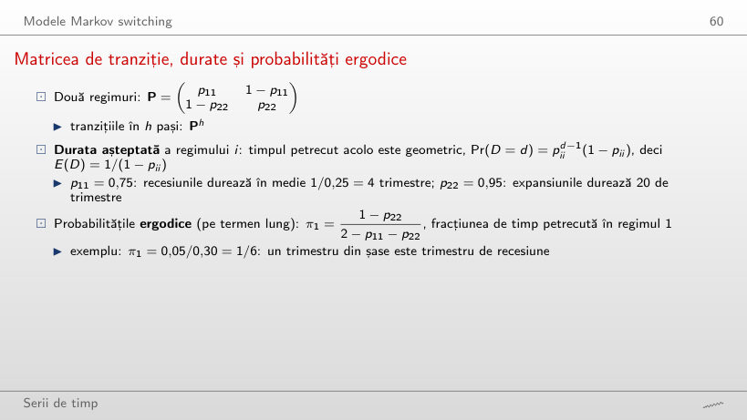
Exemplu rezolvat
Răspuns
1/(1 − 0,5) = 2 perioade. p11/(1 − p11) = 1 numără doar perioadele de după prima, iar 1/p11 nu este o durată.
Filtrul Hamilton
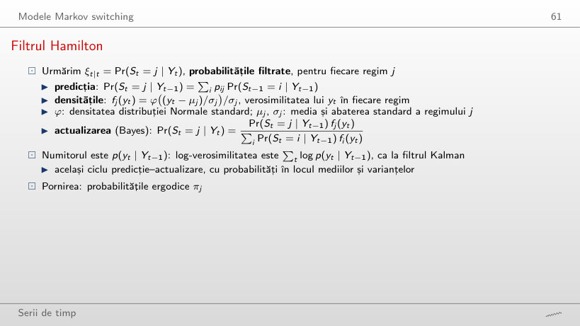
Exemplu rezolvat
Răspuns
0,993: predicția era 0,349, dar f1(−2,21) este mult mai mare decît f2(−2,21), iar regula lui Bayes duce probabilitatea aproape la 1.
Specificația lui Hamilton pe datele de azi
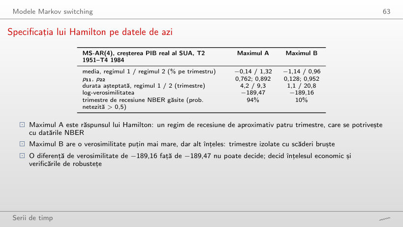
Răspuns
90% (94% la pragul 0,5); maximul B rămîne la 10%. Probabilitățile netezite ale maximului A sînt aproape 0 sau 1, deci pragul schimbă puțin.
Recesiunile din SUA din creșterea PIB
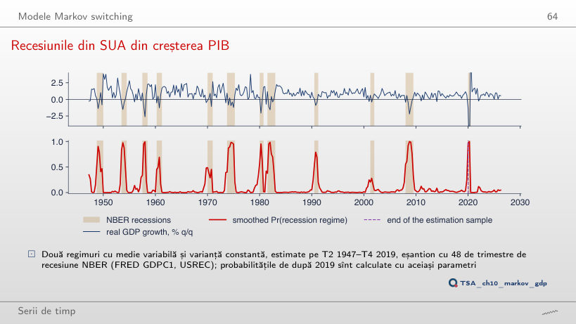
Răspuns
1,4 trimestre și 39,6% (3,2 trimestre și 62,5% la p̂11 = 0,685). Un regim mai puțin persistent cere date mai slabe pentru fiecare trimestru de recesiune, deci recesiunile scurte și ușoare nu mai sînt găsite; T2 2020 rămîne la probabilitatea 1,00.
Probabilități filtrate și netezite: 2008
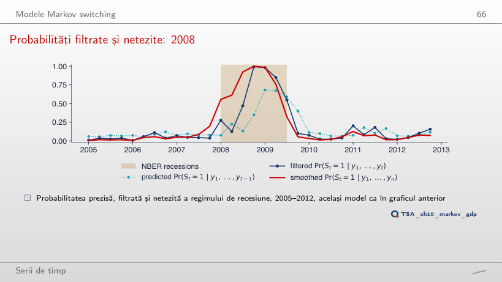
Răspuns
Nu: maximul ei este 0,38, iar nici cea netezită nu trece de 0,5. Recesiunea din 2001 a fost prea ușoară pentru media de −0,42% pe trimestru a regimului de recesiune.
Verificări: regimurile identificate de model
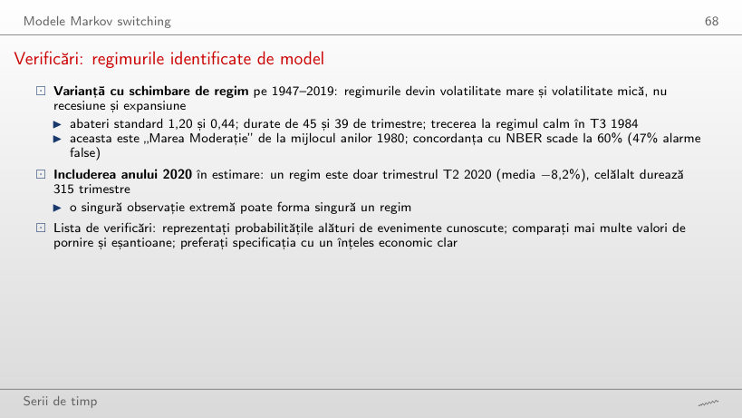
Răspuns
Unul singur, T2 2020 (media −8,2%); pe 1947–2019 regimul cuprinde 30 de trimestre. O singură observație extremă formează singură un regim.
Regimuri ale creșterii PIB în România
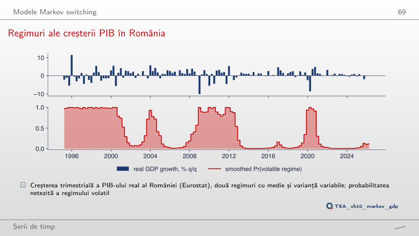
Răspuns
29% (40% la p̂11 = 0,911): un regim volatil mai puțin persistent păstrează doar trimestrele cu creșteri sau scăderi mari.
Piețe bursiere calme și agitate
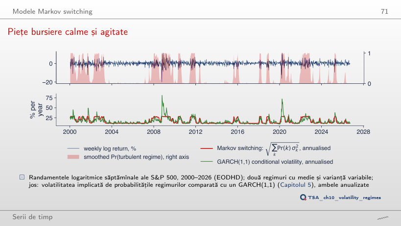
Răspuns
12% (26% la p̂11 = 0,930). p11 = 0,5 nu înseamnă o clasificare la întîmplare: un regim agitat care durează în medie două săptămîni rămîne doar pentru săptămînile extreme.
Schimbările de regim și memoria lungă aparentă
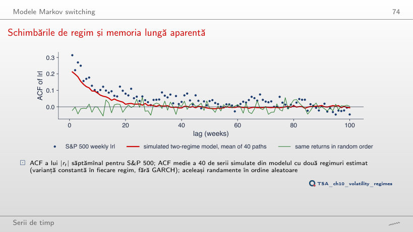
Răspuns
În jur de 0,21, sub 0,31 din date: regimurile explică o mare parte din clustering-ul pe termen scurt, nu tot. Prima traiectorie dă 0,26, a doua 0,19: media pe 40 de traiectorii elimină variația de eșantionare.
Recapitulare: modelele Markov switching
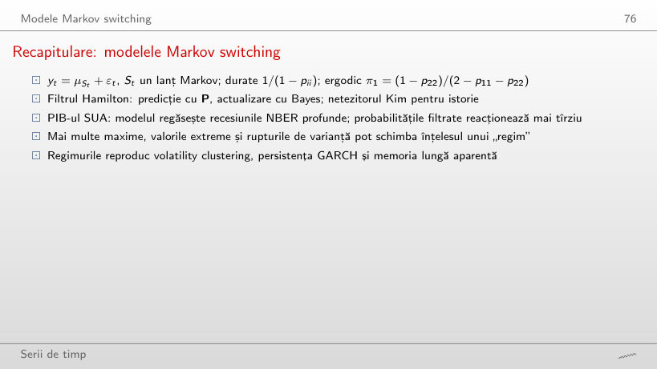
Răspuns
Expansiunea din SUA: 19,7 trimestre = 4,9 ani, față de 36,8 săptămîni = 0,7 ani. Durata 1/(1 − pii) este în unitatea de timp a datelor.
Debitul anual al Nilului la Aswan, 1871–1970 (setul de date din statsmodels). Prețurile săptămînale S&P 500, BET și Euro Stoxx 50 (data/market, pînă la 18 septembrie 2026). Creșterea PIB real al SUA și datările NBER (FRED GDPC1, USREC), citite cu funcția capitolului pe 4 noiembrie 2026 și tăiate la T2 2026, ultimul trimestru din slide-uri; reproduc exact cifrele din curs. Cei patru indicatori coincidenți (FRED INDPRO, PAYEMS, W875RX1, CMRMTSPL), citiți tot pe 4 noiembrie 2026 și tăiați la iulie 2026: au fost revizuiți după realizarea slide-urilor, iar parametrii modelului factorial (estimat pe 1967–2019) rămîn cei din curs, însă ultimele luni ale factorului diferă puțin (valoarea din iulie 2026: −0,87 cu datele de azi, −0,9 în slide). PIB-ul real al României (Eurostat namq_10_gdp) a fost revizuit după realizarea slide-urilor; pagina folosește seria din slide-uri, citită din linia vectorială a graficului din curs (charts/tsa_ch10_ro_trend.pdf, toate cele 126 de trimestre), care reproduce cifrele din curs pînă la a șasea cifră semnificativă. Componentele modelului UC, factorul comun, probabilitățile celor două maxime ale MS-AR(4), volatilitatea GARCH(1,1) și traiectoriile simulate ale regimurilor provin din codul capitolului, cu aceeași sămînță; în browser se recalculează filtrul și netezitorul Kalman, verosimilitatea, diagnosticarea, filtrul HP, filtrul Hamilton (2018), deviațiile în timp real, beta variabil, filtrul Hamilton (1989) și netezitorul Kim. Variantele care nu apar în curs (alt q, alt λ, alt h, alt sfîrșit al eșantionului, alt p₁₁, alt număr de luni lipsă) sînt rulări suplimentare ale codului capitolului, cu aceleași date; graficul „Verificări: regimurile identificate de model” este o rulare suplimentară pentru un slide care dă doar cifre.